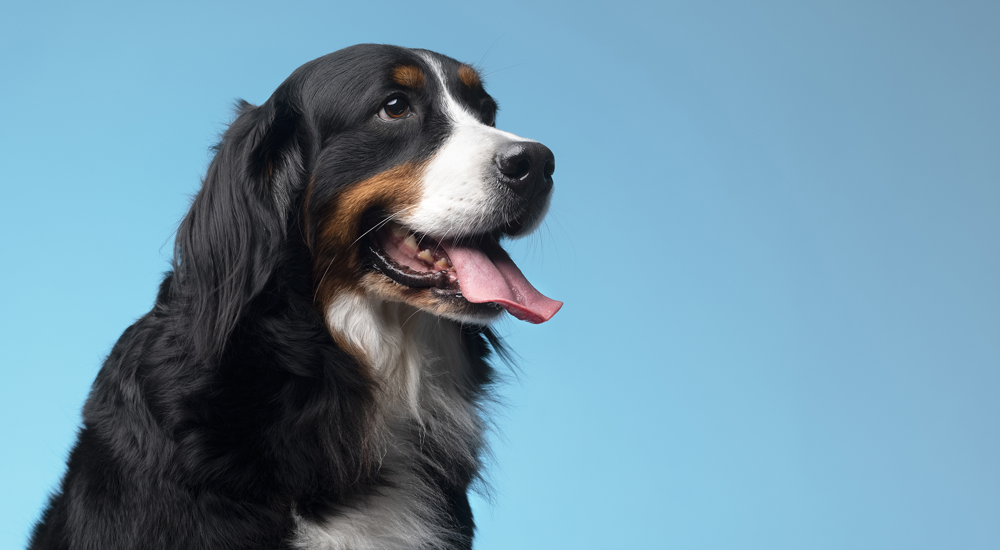
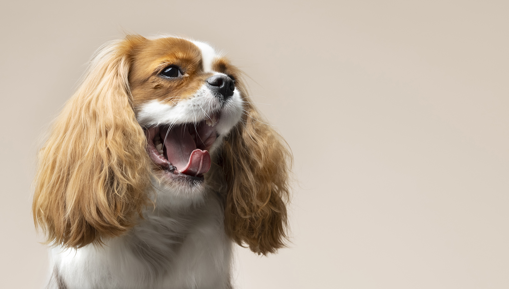
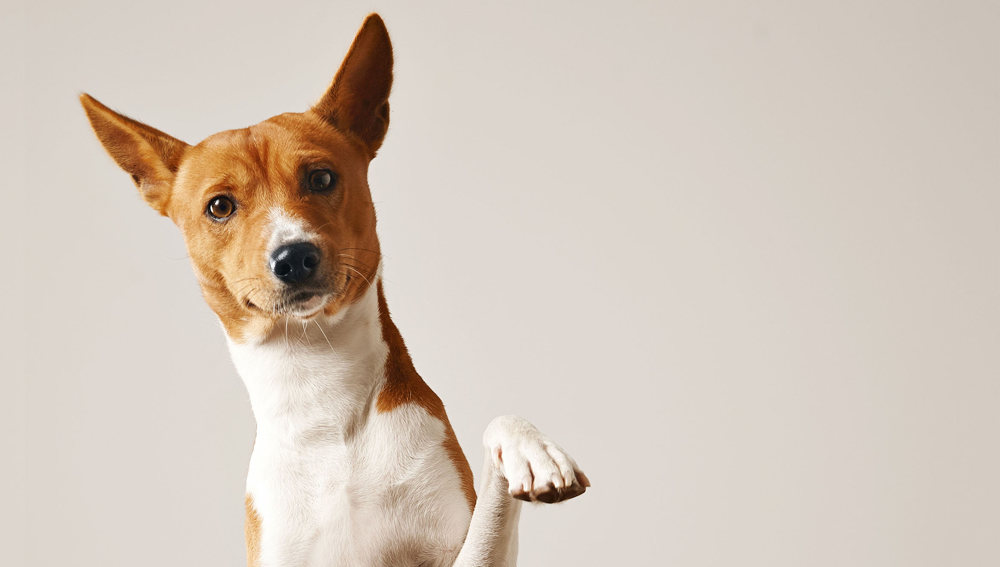

Los corazones más grandes laten con cuatro patas.
|  |
Boyero de Berna Estos perros se caracterizan por su pelaje negro, blanco y marrón, y su gran tamaño. |
|  |
Cocker Spaniel Se puede reconocer por sus orejas largas y caídas, y su pelaje dorado. |
|  |
Basenji Este perro tiene orejas erguidas y puntiagudas, un cuerpo esbelto y una coloración rojiza y blanca típica de la raza. |